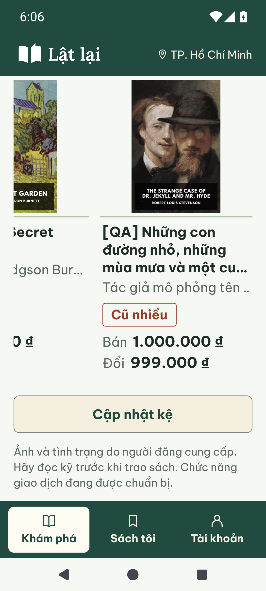

Dấu tình trạng đi cùng cuốn sách
Tên, tác giả và dấu mộc là một cụm liền mạch. Dấu cách tác giả 8dp, không còn bị đẩy xuống theo tên dài của cuốn khác. Chỉ vùng giá căn thẳng ở đáy các thẻ trong cùng hàng.
Ảnh Android thật ở khoảng 390dp, cùng bộ năm nội dung QA và bìa tư liệu. Trước: 09be958. Sau: checkpoint fix(rn): keep condition stamps beside book metadata trên nhánh codex/ui-shelf-spacing. Chưa push/merge.
100% — điều hướng cử chỉ
Trước · khoảng trắng trước dấu Sau · tác giả và dấu đi liền
Sau · tác giả và dấu đi liền
130% — ba nút Android
Trước Sau
Sau
Cuốn tên ngắn vẫn có khoảng trống sau dấu, trước giá để căn giá với cuốn dài nhất. Dấu mộc được phép khác cao độ. Tên trên kệ tối đa ba dòng; tên đầy đủ giữ ở chi tiết và nhãn accessibility.
Tên dài, Cũ nhiều và hai giá ở 130%

Kiểm tra và giới hạn · 02/10/2026
RN 96/96 tests, lint/typecheck, Expo web export 12 routes PASS; export có warning NO_COLOR và forced exit0. Android Pixel7/API35: 390dp/100% và 130%, ba nút hệ thống, chạm qua cuốn, cuộn hàng cuối, mở chi tiết rồi Back về vị trí đang xem. Web390px: đo cả năm cuốn, khoảng metadata→dấu đều8px; giá hàng1 cùng y645, hàng2 cùng y1137.
Không thêm dependency hoặc đổi API/query/session/navigation. Bỏ cơ chế đo chiều cao tên dùng chung, dùng flex layout hiện có. QA mới tại Mongo37017, database ngẫu nhiên kết thúc_test; năm listing được tạo/duyệt qua API. StorageFAKE, không phải Supabase thật. Sandbox cũ được giữ nguyên sau SANDBOX_LOST.
Chưa nghiệm thu TalkBack/ARM/iOS/release và review người thật. Lỗi tương phản ba nút Android15 khi OSdark từ gói navbar vẫn mở. Không chạy lại toàn bộ các gate không liên quan. Vòng giãn cách trước.